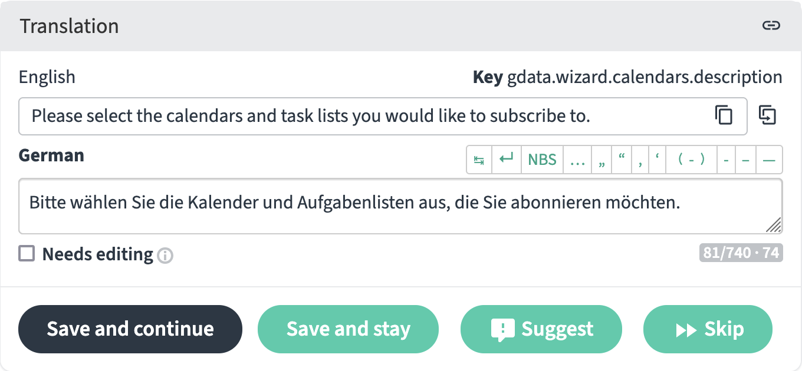
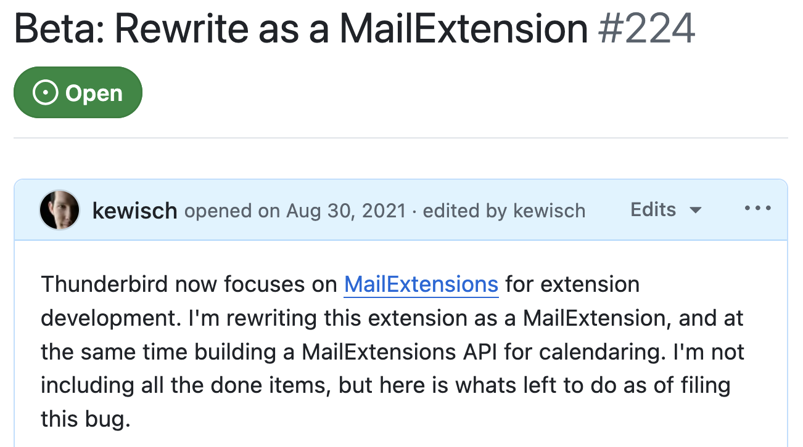

Provider for Google Calendar
The Provider for Google Calendar marked the beginning of my journey into open source. Back in 2006, there was no easy way to connect Thunderbird with Google Calendar. Driven by curiosity and a desire to help, I explored Google’s APIs and found a way to bridge that gap, enabling countless Thunderbird users to access Google Calendar. That experience not only gave me a sense of purpose but also opened doors to a professional career where open source has become an integral part of my daily life.
Your support means so much to me and keeps me inspired to improve. I can't imagine a future without this add-on.
If you realize how important this add-on is for your daily productivity, please consider making a donation. Every donation received motivates me to keep developing new features and fixing issues for everyone.
Provided in your language
The Provider for Google Calendar has mostly been translated from English to German because those are the languages I speak. A few other strings are translated due to past history of being within Thunderbird's source code repository. But about 40% of strings have changed or been added since. Thanks to Weblate, you can now easily help with the cause. Do you speak a non-English language?
Help out with translations today! Can you get your language to 100%?
Ready for something new? Try the beta version
Thunderbird has been embracing the "WebExtensions" technology you may also know from Firefox, which promises greater stability across Thunderbird updates. While there are some downsides to how customizable the UI is, it was an oppportunity to rewrite major portions of the add-on. This allowed me to fix some of the long-standing issues, for example related to dismissing reminders on meeting invites.
Become a beta tester now and help secure the future of this add-on. Given the substantial changes, having many people test the beta is key.